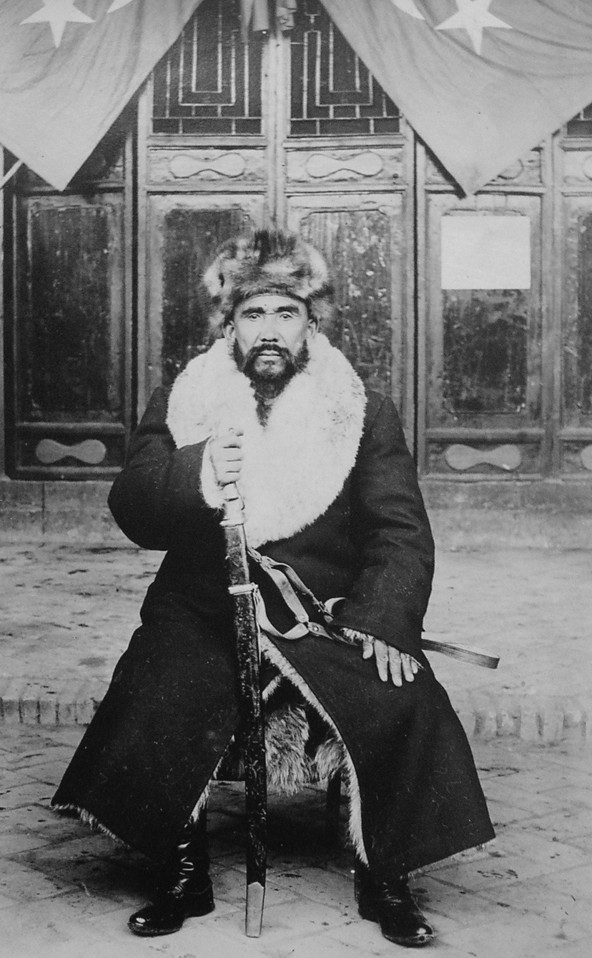

Oh, our Homeland, we cleansed your face and eyes with blood,
With the rising flame, our name has been cleansed
Our efforts became a friend / lover to you
Broad and Famous with Effort were our Ancestors

Viva la Oriental Turkestan.
Hero of East Turkestan, Hoja Niyaz.
Khoja was born in 1889 in a small mountainous village in Kumul Prefecture, Xinjiang.
He participated in his first rebellion at the age 18, joining a 1907 uprising of peasants and mountaineers against Shah Mahsut,
hereditary ruler of Kumul (who was allowed semi-autonomous rule by Qing China).
After being defeated, he fled to the Turpan region, where he entered "Astana,"
religious school and became acquainted with future prominent Uyghur Turpan revolutionary leaders, brothers Maksut and Mahmut Muhiti.
After one year of studying, he left Turpan and went on the Hajj to Mecca, adding to his name the title "Hajji".
YOU COULD SEE THAT THIS BOX IS PERFECTLY ALIGNED.
This is the main area (or column).
Our blood flowed like water on the path of salvation
For your oh our Homeland, may our lives be a sacrifice.
By giving our blood and lives we finally saved you,
We had the faith in hearts for your salvation.